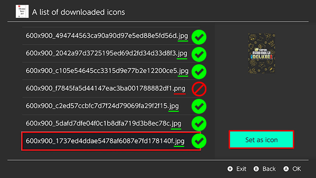

icongrabber¶
IconGrabber is a homebrew app that one can probably best described as an unofficial steamgriddb client for the Nintendo Switch.
You can search for games and then preview and download icons that you want.
After that you can apply any icon to any installed title of your switch and replace the original.

Setup¶
once you have icongrabber on your switch load it up
first time users will need their steamgriddb API key

when you first load Icon Grabber you will need to input your API key from steamgriddb

once entered the setup page should show your api key,
be sure to select the icon resolution you want to use, Slluxx Does a great job of explaining which resolution you should choose.

Manually Setting The API Key
Alternatively If you are having difficulty with the api key inapp you can add it by editing the config.json file located
on the switch SD card SDMC:/config/icongrabber/config.json

simply open the json file with notepad and paste your API key in between " "
then save the changes File > Save or Ctrl+S
Searching¶
Searching for icons can be done in 2 ways the easiest method is using the Search by installed titles
if you get an error saying icon not found there isn't an icon setup for that game you might be able to try searching by game name using a shorter name i.e: mario
on the next page you will get a list of installed games installed select the game you want to search for an icon of. in this example I'm searching for "New Super Mario Bros. U Deluxe"
if a title is found you should see the game name you are looking for

Download¶
you should then get a list if icons from this list you can choose an icon you like.
once you find a suitable icon click Download you should get a small popup on the top right
Applying Icons¶
to apply the newly downloaded icon go back to the main page select Downloaded Icons > Browse downloaded Icons
NB: from personal experience if the image downloaded is a png it doesn't usually apply and you will see a [?] instead of the desired icon
find the icon you want to apply click set as icon and find the game title you want to replace when you find the game you will see Icon saved.

choose the title you want to apply the new icon to click ok
you will then see Icon saved popup in the top right

Exit Icon grabber
reboot your switch for the new icon to show up